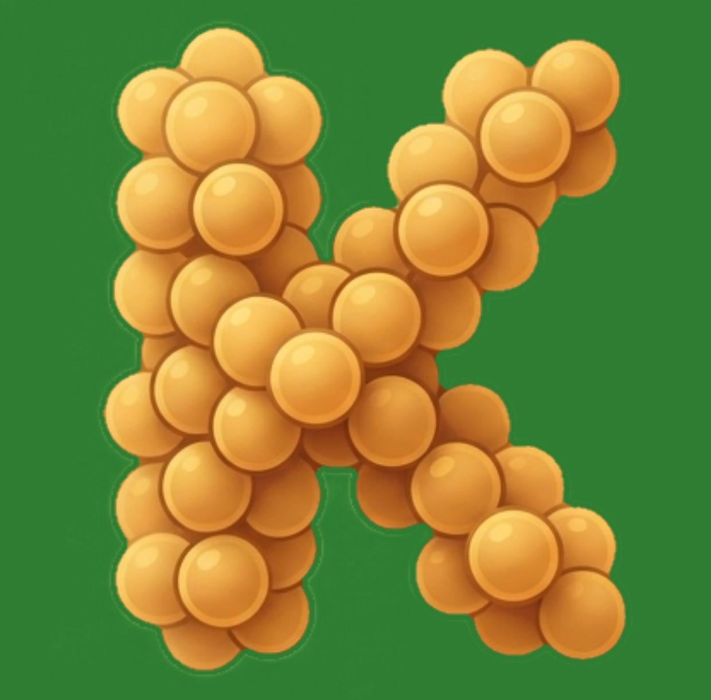
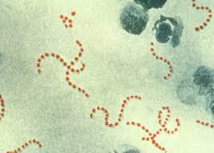
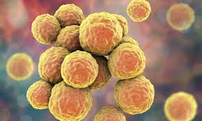
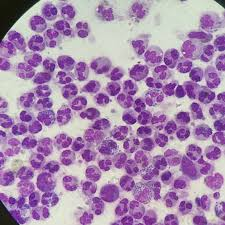

Мой любимый сайт про стрептококков | научный мир
Бактерии — это огромный домен одноклеточных микроорганизмов. Они являются одной из первых форм жизни на Земле и встречаются практически в каждой среде обитания: от глубоководных впадин до ледников и организмов животных. Бактерии обладают способностью быстро размножаться и адаптироваться к самым суровым условиям.
В этой статье мы подробно рассмотрим именно Кокков — одну из ключевых морфологических групп бактерий, имеющих форму шара или эллипса.
Кокки (от греч. kokkos — «зерно» или «ягода») — это бактерии сферической формы. В отличие от палочковидных бактерий (бацилл), кокки неподвижны и не образуют спор. Их форма позволяет им минимизировать площадь поверхности по отношению к объему, что помогает выживать в различных условиях.
Кокки выполняют двойственную роль. С одной стороны, многие из них являются важной частью нормальной микрофлоры человека (например, живут на коже или в кишечнике), участвуя в поддержании иммунитета. С другой стороны, при определенных условиях они могут переходить в состояние патогенов, вызывая воспалительные процессы. В природе они играют роль редуцентов — разрушителей органического вещества, возвращая микроэлементы в почву.
Кокки классифицируются в зависимости от того, в скольких плоскостях происходит их деление и как они соединяются после этого:
Делятся в различных плоскостях, образуя скопления, похожие на гроздья винограда. Они очень устойчивы во внешней среде. Самый известный — Золотистый стафилококк, который может жить на слизистых оболочках, не причиняя вреда, пока иммунитет крепок.
Делятся в одной плоскости, из-за чего выстраиваются в цепочки. Они являются главными обитателями полости рта и горла. Некоторые виды используются в пищевой промышленности для создания йогуртов и сыров.
Клетки располагаются попарно. К этой группе относятся серьезные возбудители, такие как пневмококки. Они часто окружены защитной капсулой, которая помогает им избегать атак нашей иммунной системы.
Деление происходит в двух взаимно перпендикулярных плоскостях, в результате чего образуются группы из четырех клеток. В медицине они встречаются реже, чем стафилококки, но важны для микробиологических исследований.
Делятся в трех плоскостях, образуя правильные кубические пакеты (обычно по 8, 16 или 32 клетки). Часто встречаются в воздухе и пыли. Их легко узнать по строгой геометрической форме под микроскопом.


